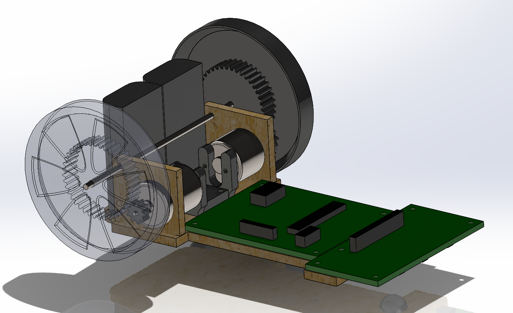
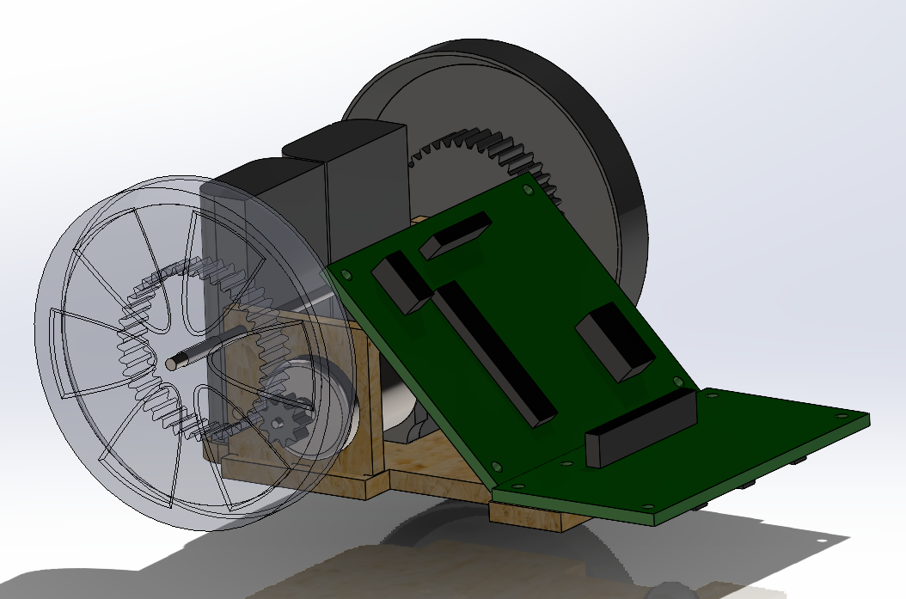

Mechanical Design Iterations
The mechanical system progressed through three major versions. Each iteration addressed problems identified during testing, particularly sensor placement, torque, wheelbase width and chassis weight.
Mark 1 — Initial Prototype
The first version used a laser-cut wooden base with 3D-printed motor mounts, wheels and gears. It provided a quick starting point but exposed several major problems.
The sensors were positioned too far ahead of the axle, causing delayed steering response and frequent corner overshoot. The gear ratio also provided insufficient torque, causing the motors to stall at lower speeds.

Initial wooden chassis with 3D-printed drivetrain components.

Shortened second iteration with the sensors moved closer to the axle.
Mark 2 — Revised Layout
The second version reused most of the original components but shortened the base and repositioned the electronics to move the sensors closer to the axle.
This improved cornering response, but the wide wheelbase still limited agility and the unchanged gear ratio meant the motors continued to stall.
Final Design
The final version was a complete redesign focused on compactness, lower mass and increased drivetrain torque.
A third gear was added between each motor and wheel, increasing the theoretical torque by approximately 4.4 times. The wooden base was replaced by a fully 3D-printed chassis with integrated supports, cable routing and component mounts.
The narrower wheelbase improved manoeuvrability, while the centrally aligned battery, controller and sensors produced better weight distribution.

Final compact CAD design incorporating the revised gear train and integrated 3D-printed chassis.